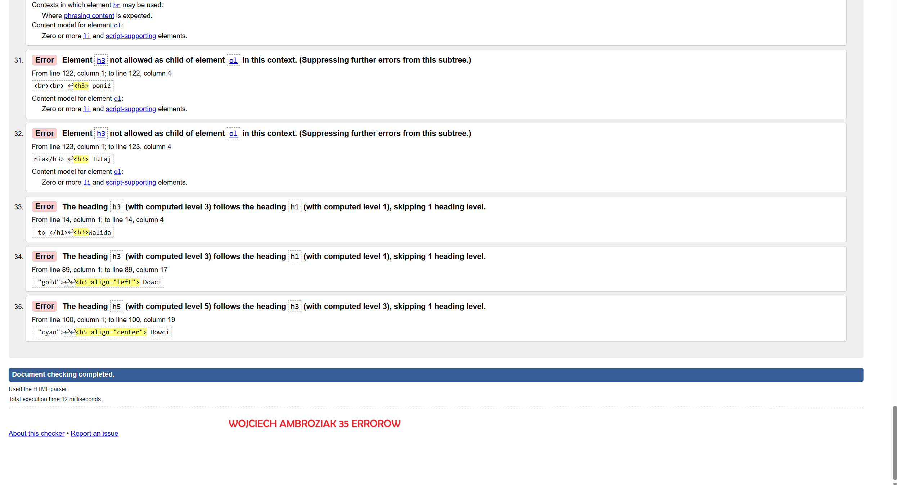

Walidacja strony HTML to
Walidacja strony HTML to proces sprawdzania, czy kod strony jest zgodny ze standardami W3C. Obejmuje to sprawdzenie składni i struktury kodu, co pozwala wykryć błędy, takie jak brak zamkniętych tagów czy zduplikowane atrybuty.
Walidator to program, który sprawdza poprawność dokumentu.
